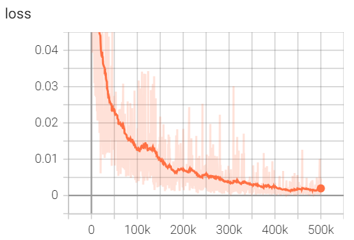
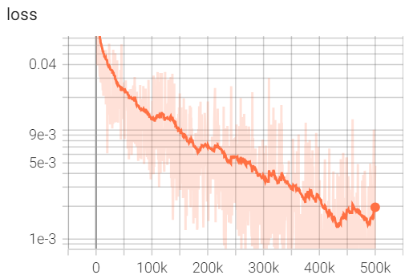

Diffusion Policy Part 3
Playing CarRacing-v3 with Diffusion
Implementation here. See also: Part 1 | Part 2
Diffusion Policy
After making an image diffusion model, I finally reached the intended goal of applying diffusion to imitation learning. For this experiment I used the CarRacing environment from OpenAI Gym (actually it's Gymnasium now). I am ultimately interested in imitation learning for robotics, especially using vision, and while CarRacing is a toyish problem it has the nice features that the state is an image, and the controls are continuous.
The main idea of diffusion policy is that we generate actions rather than something like images. If we condition on the current state (actually a short history of states) in addition to the diffusion time t, we can use a diffusion model to imitate expert data.
A major selling point of diffusion policies is that they can model multimodal distributions, a common property of human demonstrations. To be true to the technique, I collected many runs of myself playing CarRacing with a joystick rather than training an RL policy, which would probably have a Gaussian output head. If we applied diffusion to the latter, we would be going to a lot of effort to map between two Gaussians and that just didn’t feel right.
One thing I quickly learned is that CarRacing is really hard. I probably played the game 500+ times, and it is not forgiving. If you approach it the way I approach other racing games (glue the accelerator down and turn), you are not going to get very far. Once I got halfway decent at the game, this made me appreciate it a lot more. Even though this is a toy problem in the sense that it is a 2D game, the control requires some finesse. I eventually collected 20 runs that had few mistakes (made it all the way around the track without leaving it). My runs had an average score of 923.8 +/- 8.5, and an average length of 761.9 steps. In total this amounted to 15,238 (state, action) pairs.
Behavior Cloning
A first sanity check is to try BC on this dataset- what if we just learn a CNN that maps states to actions directly from our dataset? This works pretty well for imitating an RL policy that is centered around a single mode (we can just learn to output the mean, or even model a Gaussian head on our cloned policy), but how does it work for this real world data?
In this case, it went better than I expected. After training and running for 100 episodes, the policy has an average performance of 778.9, but with a standard deviation of 202. This means it is sometimes doing very well, but other times quite poorly. It appears that the distribution of runs skews high- many are in the 800s, but a few are poor. If we exclude the bottom 10% of runs, the average jumps to 839.3, with a standard deviation of 79.3. All of the runs timed out at 1000 steps, rather than finishing the lap cleanly (in CarRacing, if you stay on the track the entire lap you will end the episode early). Note that the BC policy takes in a history of 4 states but just predicts the next action.
To be honest, I did not spend more than an hour or two on this, so it is not a very fair baseline. But still an interesting comparison perhaps.
Predicting Sequences of Actions
Following the Diffusion Policy paper, we will condition on a history of 4 recent states, and predict several actions ahead (I used 8). Therefore our training data is not (state, action) but rather (four states, eight actions), which span a sequence of 11 steps: 4 previous states, the next action (shared with the last state), and 7 future actions.
Since our actions are of size 3, the diffusion model will need to generate data of size (3, 8). Our primary input to the diffusion model is noise, not the state, so we need to inject the state as a condition, much like we inject time as a condition. Our complete input will be (noise of size (3,8), time conditioning features, state conditioning features).
During the diffusion sampling process (varying diffusion time t), the state condition will not change. To simplify things, I made a separate CNN to process the state and provide a flat feature vector of the same size as the time features.
Conditional 1D UNet
Putting all this together, we need to construct a 1D UNet that accepts 2 conditioning vectors: one for time and one for state. We can do this pretty easily by swapping out the 2D convolutions in the image-generation UNet for 1D convolutions, and adding another input vector. One interesting problem is what should correspond to "channels"- do we have 8 channels of 3 values each or 3 channels of 8 values each? In other words, is each channel an independent action or is each channel a position across all actions?
Since we want the UNet to be able to resize our data internally, I selected the latter. We can imagine this as 8 "pixels", each with 3 channels, each pixel representing an action. This allows the UNet to resize our data internally: initially to more channels, say (3,8) → (32,8) using channels-first notation, and then along the other dimension: (32,8)→(32,4)→(32,2) and back again. If the 8 and 3 were reversed, this wouldn’t really be possible.
To add in the state features, I first passed them through a linear layer such that we have the same number of features as channels, and repeated these features along a new dimension to match the current sequence length: for example, (256,) features becomes (32,) features, becomes a (32,8) tensor for the first block. I then concatenated this to the existing data to get twice as many channels temporarily, (64,8), which is reduced back down in a subsequent convolution. The full convolutional block forward pass is:
def forward(self, x, t_emb, cond):
# first 1D convolution
y = swish(self.norm1(x))
y = self.conv1(y)
B, ch, sz = y.shape
# inject the state condition
c = swish(cond)
c = self.cond_layer(c)[:,:,None]
c = c.repeat(1, 1, sz)
y = torch.cat((y,c), dim=1) # concat channels
# second 1D convolution
y = swish(self.norm2(y))
y = self.cnov2(y) # reduces 2x channels to 1x
# time features
t = swish(t_emb)
scale = self.time_scale(t)[:,:,None,None] + 1.0
shift = self.time_shift(t)[:,:,None,None]
y = y*scale + shift
# third 1D convolution
y = swish(self.norm3(y))
y = self.dropout(y)
y = self.conv3(y)
# return with residual connection
return y + x
Compared to the image generation network, this has 3 convolutions instead of 2, just so I could sandwich the condition injections between convolutions. This felt right; no idea if it actually helps.
Training
Training the diffusion policy, like an image generator, is not fast. Most of the variations I tried were in the millions of parameters and needed several hours to train, if not overnight. As in image generation, convergence is slow:

We get a final loss of around 0.0015 after 500k batches of size 32, where the loss is the mean squared error against the actions in our dataset. Considering the actions range from -1 to 1, this is fantastic. The total training time was about 8 hours on my 4090.
Flipping to a logarithmic plot, we see a very clear linearesque trend over the course of training:

Deploying the Policy
I will note that while training is slow, this pretty much worked well right away. Granted, the first time I collected expert data I accidentally copied the final state over the entire trajectory and that error took me two days to find, but after that... it worked right away.
To use a diffusion policy, we maintain a rolling history of states and periodically generate the next N actions, in this case 8. Following the paper, we only use half of these before we generate more. This results in a stutter-step behavior: generate 8 actions but keep 4, execute 4 actions, repeat. In a real-time playing of the game there is a clear pause every 4 frames (even when using, i.e. DDIM). It is interesting how well this works considering we are generating several actions in one pass and then blindly executing them, although as long as nothing catastrophic happens in those few steps we should be fine.
Results
The diffusion policy scores very well on average, with a mean score of 889.7, although the standard deviation is still high (144). The average length of the runs is 802.9, indicating that many runs finish early (perfect runs). As in the BC results, the distribution skews high, but a few poor runs bring the averages down. If we exclude the bottom 10% of runs, we see the average jump to 920.6 +/- 10.8, essentially matching my score of 923.8 +/- 8.5. This is pretty amazing considering there were only 20 example runs, and they did not showcase major corrections of mistakes (which can often derail imitation learners.)
The final policy only runs at about 10 frames per second, which is jarring to watch. However, we can visualize the individual frames compiled into a video:
Watching this video, I can definitely tell that it is imitating me and is not, i.e., an RL policy. The corrections are sharp and infrequent because I couldn't make lots of tiny adjustments, and it learns some nice things like slowing down before tight turns but not worrying about it for slight turns. Overall I am very impressed with this technique. You can find my implementation here.
In a future post I want to try some additional architecture changes, namely DiT and classifier-free guidance. I would also like to test the policy’s robustness to perturbations during deployment. I may follow up with another post on future directions for these experiments.
Recent Posts:
Diffusion Policy Part 3
Playing CarRacing-v3 with Diffusion
November 1, 2024
Diffusion Policy Part 2
Generating Images
October 30, 2024
Diffusion Policy Part 1
How does Diffusion Work?
October 20, 2024
More Posts